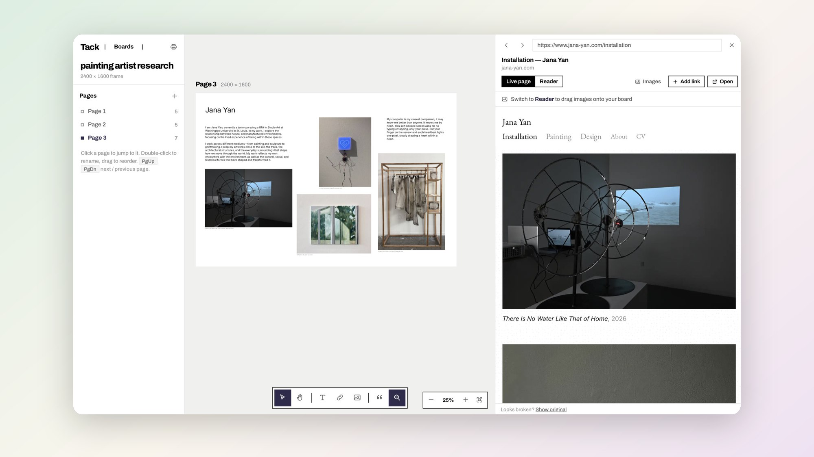
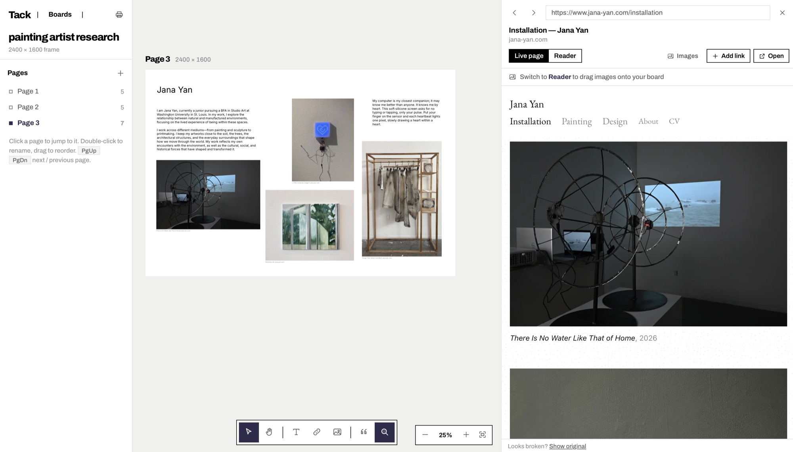
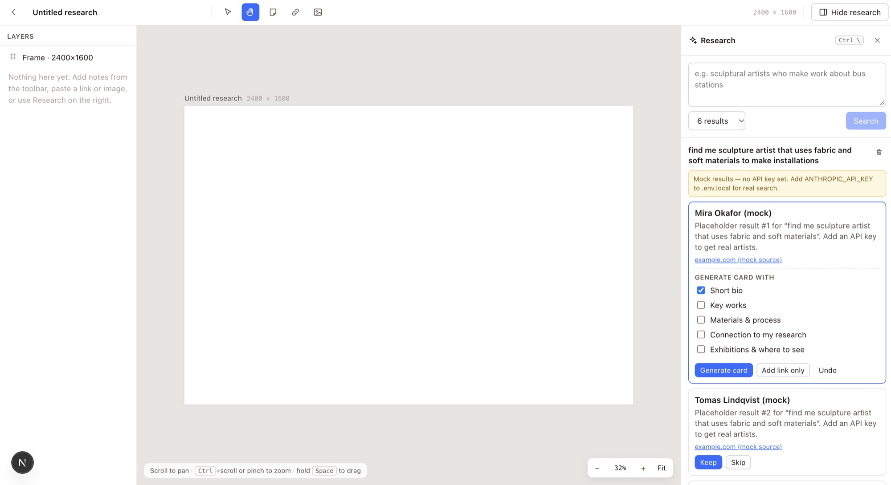
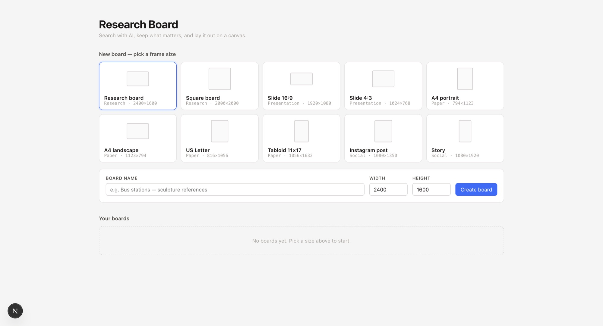

Tack is a visual research canvas where every image keeps its source and the day you found it

Visual research splits every reference in two: the image goes onto a board, while its source stays in a browser tab.
- Nothing links the image to where it came from
- Every image needs two copy-pastes: the picture, then its URL
- One closed tab can cost a citation for good
A research board where the source travels with the image. Search sits beside the canvas, and every item records where and when it was found.
Boards save in the browser from the first visit, and signing in moves them to an account. A browser extension and an AI research assistant extend the same workflow beyond the app.
More than 50 tabs, and no idea where half the images came from
The project began with an artist research assignment: collect work by 10–20 artists who influence my practice. By the end, I had more than 50 tabs open across Instagram, artist portfolios and online journals. Gathering images was straightforward. Tracking where each one came from was not.
My workflow spanned three tools, and each failed in a different way:
Figma
Every image needed two copies: the image itself, then its URL for the citation.
Google Slides
The same double copy-paste. Closing a tab by mistake lost the source permanently.
Limited to images already on Pinterest. If a pin is deleted, the image is lost.
The problem was never layout. Each image and its source lived in separate places, held together only by memory and open tabs.
Tack is built on a single principle: an image and its source should never be separated.
Anyone whose research is visual
Tack began as a personal tool, but the problem is shared by art and design students and by people in fashion, architecture, art history and marketing. Informal conversations with peers suggested the concept reaches well beyond my own use.
The third response was the most telling: someone with no creative background saw an immediate use for Tack, pointing to a wider audience than I had planned for.
- FashionBuilding mood boards
- DesignCollecting typography and image references
- Non-creative fieldPersonal collections, such as favorite animated characters
Shaped by technical limits as much as by user needs
As a solo project, two limits set the shape of the product early on.
AI cost
Every request has a real cost, so AI is an optional layer rather than the foundation of the product.
Storage
Images are heavy, so boards are stored in the browser by default, and accounts serve users who need long-term storage.
Four times I moved away from the obvious default
The default was usually “do what Figma does” or “let the AI handle it.”
Pages instead of layers
- default
- A Figma-style layers panel.
- decision
- Pages, with several visible on one screen.
Creative insight often comes from connecting unrelated subjects. Layers organize a single board; pages let you compare several research threads side by side.



Search-first, not AI-first
- default
- An AI assistant that returns results on request.
- decision
- A familiar, Google-style search panel beside the board, with links opening in a preview or in the browser.
Search keeps you in control of which sources you visit and where your images come from. For research that must be cited, that control outweighs speed. AI supports the search rather than replacing it.

A sketchbook, not a design tool
- default
- A dark, Figma-like interface.
- decision
- A light, white-and-beige sketchbook look with more expressive icons.
Artists research in sketchbooks, not production software. A tactile, physical-tool feel makes Tack a space for thinking and collecting rather than for producing final work.

Local-first, account optional
- default
- Sign up before creating a board.
- decision
- Boards save in the browser immediately; signing in moves them to an account.
Removing setup lets someone with a one-off project start right away, while returning users have a clear reason to create an account.
Source tracking
Every image on a Tack board keeps its source and capture date. This is what sets Tack apart from Pinterest or Figma.
In my old workflow, the link existed only in an open tab, so closing it could break a citation permanently. On Pinterest, the image itself could disappear if the uploader removed it.
jana-yan.com/installationfound Nov 12, 2026Where the web fights back
Expiring image links
Instagram and Facebook image URLs expire after a few days, so for these sites the Tack Clipper extension stores a copy of the image, not just the link.
Blocked right-click
Instagram blocks right-clicking on images, so a Pick Images mode lets you select images straight from the page.
No open board
Clipped items wait in a queue, with a count on the extension icon, until you open a board.
From Research Board to Tack
Tack began as Research Board, a tool that opened on a frame-size picker and centered on AI-driven search. Across versions, the name, the visual language and the core of the product all shifted: from an AI that finds material for you to a board where you lead the research and Tack keeps the record.
Research Board
Positioned around AI search: “Search with AI, keep what matters, and lay it out on a canvas.”

Dark mode
The same start page in a dark, Figma-like interface, before the move to a sketchbook feel.

Tack
A light board with pages side by side, search beside the canvas and a source on every image.
Live, and what’s next
Shipped
Tack is live at tack-eta.vercel.app, with boards, folders, web search, automatic source tracking, an AI research assistant and a browser extension.
Next
Introduce a free tier alongside a paid plan with account features.
Try Tack, or ask me about it
This page is a snapshot of the process. I’m happy to walk through the whole thing.
Visit live site Email me